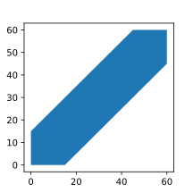

Основные понятия теории вероятности
Предмет теории вероятности - Эксперимент с неодназначным исходом.
\( \Omega \) - Множество исходов эксперимента (множество элементарных исходов).
Рассмотрим примеры множества исходов
Пример 1 (Игральный кубик)
\( \Omega\) = {\( \omega_1, \omega_2... \omega_6 \)} где \(\omega_i\) - это выпадение какой-то i грани кубика
Пример 2 (Стрельба по мешени)
Попадание в мешень будет задаватья парой точек \( (x, y)\) и удовлетвоярть уравнению круга заданного радиуса.
В общем виде \( \ \Omega\) = {\( (x, y)\) | \( x^2 + y^2\) \(\leqslant\) \(R^2\)}
Введем множество \( \ \mathcal{F}\) ( \( \mathcal{F}\) - готическая) - это некоторое множество подмножеств \( \ \Omega\). Часто это множество всех подмножеств \( \ \Omega\).
Рассмотрим подмножество на примере кубика
У кубика 6 граней, значит количество подмножеств в \(\ \Omega\) будет равно \(2^6\).
Элементы \( \ \mathcal{F}\) называются событиями. Обычно принято обозначать события как A,B,C...
Рассмотрим события на примере кубика
Пусть для примера у нас событие \( \ А\) - это выпадение всех граней с нечетными номерами, тогда будем иметь следующее: \(А\) = {\(\omega_1, \omega_3, \omega_5\)}
Операции над событиями
1. Сложение (Объединение \(\bigcup\))
Определение: Суммой событий \(A\) и \(B\) называется событие обозначаемое как \(A + B\) или \(A \bigcup B\) и состоящее в том, что хотя бы одно из двух событий произошло. Это определение можно обобщить для \(N\) событий, достаточно сказать, что произошло хотя бы одно из \(N\) событий.
2. Умножение (Пересечение \(\bigcap\))
Определение: Произведением событий \(A\) и \(B\) называется событие обозначаемое как \(A \cdot B\) или \(A \bigcap B\) и состоящее в том, что имеет место оба события, то есть события произошли одновременно. Это определение можно обобщить для \(N\) событий, достаточно сказать, что произошли все \(N\) событий.
3. Вычитание (Разность /)
Определение: Разностью событий \(A\) и \(B\) называется событие обозначаемое как \(A / B\), то есть \(A\) без \(B\) и состоящее в том, что событие \(A\) произошло, а стобытие \(B\) - нет. Эту операцию мы можем расширить на \(N\) событий.
Определим два частных события:
\(\varnothing\) - невозможное событие, то есть то, которое ни при каких условиях не произойдет.
\(\Omega\) - достоверные события. Множество исходов (которое обозначается так же \(\Omega\)) связаны, просто достоверные события - это подмножество всех событий.
4. Отрицание
Определение: Для события \(A\) можно ввести событие \(\bar A\) состоящее в том, что \(A\) не произошло. То есть по-другому можно сказать, что все кроме \(A\).
Рассмотрим примеры этих операций
Пусть \(A\) = {\(\omega_1, \omega_3, \omega_5\)} , а \(B\) = {\(\omega_3, \omega_6\)}
- \(A + B\) = {\(\omega_1, \omega_3, \omega_5, \omega_6\)} - объединили элементы двух множеств
- \(A \cdot B\) = {\( \omega_3\)} - взяли элементы которые есть и в \(A\) и в \(B\)
- \(A / B\) = {\(\omega_1, \omega_5\)} - убрали из множества \(A\) элементы множества \(B\)
- \(\bar A\) = {\(\omega_2, \omega_4, \omega_6\)} - взяли все кроме элементов множества \(A\)
- \(\bar B\) = {\(\omega_1, \omega_2, \omega_5, \omega_4\)} - взяли все кроме элементов множества \(B\)
Цель теории вероятности - количественно определить наступление того или иного события (исхода). Если записать формально, то получим, это отображение следующего вида:
\(P\) :\( \ \mathcal{F} \rightarrow R\) - То есть перевод из вероятности \(P\) на подмножестве \( \ \mathcal{F}\) в вещественное пространство R.
Классическое определение вероятности
Определение: Множество \( \Omega \) конечное, то есть \( \Omega \) = {\(\omega_1... \omega_n\)}. Предположим, что все исходы равновозможны и в данном случае будем считать, что \( \ \mathcal{F}\) - множество всех возможных подмножеств \( \Omega \), тогда \(\forall A \in \ \mathcal{F}\) имеем \( P(A) = \frac{m}{n} \) где m - число блогоприятных исходов, а n - множество всех возможных исходов. \( P(A)\) - вероятносная мера \(A\).
Алгоритм решения задач на классическое определение вероятности
- Определяется структура исхода (что такое исход)
- Определяется m и n (благоприятные исходы и всевозможные)
- Определяется при необходимости структура благоприятного исхода
- Найти вероятность то есть посчитать по формуле \( P(A) = \frac{m}{n} \)
Необходимые сведения из комбинаторики
Пусть имеется группа \(\ N\) объектов из нее надо выбрать m объектов причем m \(\leq\) \(\ N\). И возникает вопрос, а сколько таких способов? Этот вопрос поделится на два случая
- Если порядок в группе отбираемых объектов не важен: \[С^m_n = \frac {n!}{m!(n-m)!}\]
- Если порядок в группе отбираемых объектов важен: \[A^m_n = \frac {n!}{(n-m)!} = С^m_n \cdot m!\]
Правила произведения в комбинаторике
Предположим, что надо совершить последовательность действий \(1,2...k\). Первое действие может иметь \(\ n_1\) результатов, второе \(\ n_2\) и так далее, тогда вся последовательность действий может быть найдена как \(n_1 \cdot n_2 \cdot\ldots\cdot n_k\)
Сигма алгебра (\(\sigma\) - алгебра)
Определение: Пусть \( \Omega\) - множество произвольных структур, тогда \( \mathcal{F}\) - некоторое множество подмножеств \( \Omega\) и называется \(\sigma\) - алгеброй на \( \Omega\), если выполняются следующие условия:
- \( \Omega \in \mathcal{F}, \varnothing \in \mathcal{F}\) (Должно содержать достоверное событие)
- \( \forall A \in \mathcal{F}, \bar A \in \mathcal{F}\) (Вместе с любым событием алгебра содержит противоположное событие)
- \( \forall \{ A_i \}_{i=1}^{\infty} \) такая, что \( \forall_i A_i \in \mathcal{F}\) выполняется утверждение \(\bigcup _ {i=1}^{\infty} A_i \in \mathcal{F}\) (то есть вместе с любыми двумя событиями алгебра содержит их объединение или же можно сказать, что операция объединения не выводит нас за границы множества \(\mathcal{F}\))
Свойства \(\sigma\) - алгебры
- \( \forall \{ A_i \}_{i=1}^{\infty} \) такая, что \( \forall_i A_i \in \mathcal{F} \) выполняется, что \( \bigcap^{\infty} _ {i=1} A_i \in \mathcal{F}\) ( Для случая, когда у нас бесконечное число событий)
- \( \forall \{ A_i \}_{i=1}^n\) такая, что \( \forall_i A_i \in \mathcal{F} \) выполняется, что \( \bigcap^{n} _ {i=1} A_i \in \mathcal{F}\) ( Для случая, когда у нас конечное число событий)
Доказательство
- Справедливо утверждение: \( \bar \bigcap^{\infty} _ {i=1} A_i = \bigcup^{\infty} _ {i=1} \bar A_i\) (То есть мы можем просто применить отрицание ко всему выражению). Тогда построим логическую цепочку следующим образом: По 1 свойству имеем \( A_i \in \mathcal{F} \longrightarrow \bar A_i \in \mathcal{F}\), по 3 свойству имеем объединение этих событий \(\bigcup^{\infty} _ {i=1} \bar A_i \in \mathcal{F} \), по 2 свойству имеем \( \bar \bigcup^{\infty} _ {i=1} \bar A_i \) (Отрицание от отрицания) и оно по правилам отрицания равно \( \bigcap^{\infty} _ {i=1} A_i \in \mathcal{F}\) \( \boxtimes\)
Для объединения доказательство аналогичное.
Докажем в случае конечного числа событий.
- Рассмотрим пересечение конечного числа событий \( \bigcap^{n} _ {i=1} \) мы можем дополнить конечное число событий до бесконечного следующим образом:
\( \bigcap^{n} _ {i=1} A_i= A_1 {\bigcap} A_2 \ldots \bigcap A_n \bigcap \Omega \ldots \bigcap \Omega = \bigcap^{\infty} _ {i=1} A_i \) - бесконечное множество пересечений. \(A_i = \Omega , \forall i \geqslant n \). То есть добавленные события также входят в \(\mathcal{F}\). Тогда \( \bigcap^{n} _ {i=1} A_i \in \mathcal{F} \ \boxtimes \)
Доказательство для объединения аналогичное, достаточно взять вместо конкретного множества \(\Omega \) пустые множества \(\varnothing\).
Примеры \(\sigma\) - алгебры
- Самая узкая \(\sigma\) - алгебра на \(\Omega\) (то есть любая другая группа включает ее):
\(\mathcal{F} = \{ \varnothing, \Omega \} \) - тривиальная
- Самая широкая \(\sigma\) - алгебра - это \( \ \mathcal{F}\) - множество всех подмножеств \( \ \Omega\)
- \( \mathcal{F} = \{ \varnothing, \Omega, A, \bar A \}\) где A - произвольное событие
- Борелевская \(\sigma\) - алгебра \( \ \Omega = R \)
Определение (Борелевская \(\sigma\) - алгебра): Это такая \(\sigma\) - алгебра \( \ \Omega = R \) называется минимальной \(\sigma\) - алгеброй на R содержащая все числовые промежутки вида \((x_1,x_2),[x_1,x_2), (x_1,x_2], [x_1,x_2] \) где \(x_1 \leqslant x_2\), возможно, что \(x_1 = - \infty\) или \(x_2 = + \infty\).
Определение: Минимальной \(\sigma\) - алгеброй называется такая \(\sigma\) - алгебра, если у нас получается вместить в него всевозможные объединения, пересечения и дополнения множеств.
Аксиоматика Колмогорова
Предпологаем, что \( \Omega \) множество произвольной природы. \( \ \mathcal{F}\) - \(\sigma\) - алгебра на \( \Omega \) и имеем отображение на множество действительных чисел \(P: \mathcal{F} \longrightarrow R \). Если выполняются следующие свойства:
- \(P(A) \geqslant 0\) \( \forall A \in \mathcal{F} \) (То есть вероятность может быть только положительным числом)
- \(P(\Omega) = 1\) (То есть вероятность от всего множества событий)
- Счетная-аддитивность. Если \(\{A_i\}_{i=1}^\infty\) последовательность элементов \(\mathcal{F}\) такие, что \(\forall \ i \neq j \ P(A_i A_j) = 0 \) (\(A_i \ и \ A_j\) называются несовместными событиями), то \( P \ ( \cup _{i=1}^{\infty} A_i ) = \Sigma _{i=1}^{\infty} P(A_i)\) (Объединение вероятностей можно трактовать как сумму вероятностей).
Этот набор \(\Omega,\mathcal{F}, R \) называется аксиоматикой Колмогоров, а запись \(\{\Omega,\mathcal{F}, R\} \) называется вероятностным представлением.
Определение: В теории вероятностей несколько событий называются несовместными, или несовместимыми, если никакие из них не могут появиться одновременно в результате однократного проведения эксперимента.
Определение: События событий А и В называются независимыми, если появление одного из них не меняет вероятности появления другого.
Определение: Событие А называется зависимым от события В, если вероятность события А меняется в зависимости от того, произошло событие В или нет.
Свойства вероятности меры
- \(P(\varnothing) = 0\) - вероятность невозможного события = 0
- \(P\) - конечная аддитивность
- \(P (\bar A )= 1 - P (A)\)
- \(P\) - монотонная \( A \) < \(B \Rightarrow P(A) \leqslant P(B) \)
- \(0 \leqslant P(A) \leqslant 1\)
- Формулы сложения и умножения вероятностей для событий
Вероятность появления одного из двух несовместных событий равна сумме вероятностей этих событий, то есть \[P(A+B)=P(A)+P(B)\] Заметим, что сформулированная теорема справедлива для любого числа несовместных событий: \[P(\Sigma_{i=1}^n A_i)=\Sigma_{i=1}^n P(A_i)\]
Вероятность суммы совместных событий вычисляется по формуле:
\[P(A+B)=P(A)+P(B)−P(A⋅B)\]
Вероятность произведения независимых событий А и В вычисляется по формуле:
\[P(A⋅B)=P(A)⋅P(B)\]
Вероятность произведения зависимых событий вычисляется по формуле условной вероятности, а именно по следующей формуле: \[P(AB)=P(B)⋅P(A|B)=P(A)⋅P(B|A)\] Определение: Условной вероятностью \(P_A(B)=P(B|A)\) (два обозначения) называют вероятность события В, вычисленную в предположении, что событие А уже наступило.
Вероятность совместного появления двух зависимых событий равна произведению вероятности одного из них на условную вероятность второго, вычисленную при условии, что первое событие произошло.
- Формула сложения для n совеместных событий (за основу берется формула включений исключений).
\[P(A_1 + A_2 + \ldots + A_n) = \Sigma _{i=1}^n P(A_i) - \Sigma _{i=1, j=1 (i\neq j)}^n P(A_i A_j) + \Sigma _{i=1, j=1, k=1 (i\neq j \neq k )}^n P(A_i A_j A_k) + \ldots + (-1)^n P(A_1 A_2 A_3 \ldots A_n)\] Мы в этой формуле перебираем сначала все возможные пары событий, потом тройки событий и так далее, делаем мы это для того, чтобы не считать некоторую область несколько раз, лучше представлять круги Эйлера для лучшего понимания этой формулы).
-
\(P(\cup _{i=1}^n A_i) \leqslant \Sigma _{i=1}^n P(A_i)\)
-
Непрерывность вероятностной меры:
Если \(\{A_i\}_{i=1}^\infty\) - последовательность элементов \( \ \mathcal{F}\) таких, что \(A_i \supset A_j \ \forall A_i \) где \(j = i + 1\), если \( \cap _{i=1}^{\infty} A_i \neq \varnothing\) то \(\lim P(A_i) = 0\) при \(i \longrightarrow \infty\)
Основные типы вероятностных пространств
1. Дискретное вероятностное пространство
\( {\Omega, \mathcal{F}, P} \) называются дискретным вероятностным пространством, если
- \( \Omega \) - не более чем счётное
- \( \mathcal{F} \) - множество всех подмножеств \( \Omega \)
- \( \forall A \in \mathcal{F} \quad P(A) = \sum_{\omega_i \in A} P(\omega_i) \)
Частный случай - классическое пространство: \( \Omega = \{ \omega_1, \ldots, \omega_n \} \) - конечное, \( P(\omega_i) = \frac{1}{n} \).
2. Геометрическое определение вероятности
Если исходов более чем счётное множество, то дискретное вероятностное пространство не подходит.
Пусть существует некоторая область D в \( \mathbb{R}^n \). Бросим точку в эту область. Тогда вероятность попадания P точки в область G \( (G \subset D) \) будет равна \[ P = \dfrac{\mu(G)}{\mu(D)} \] где \( \mu(G) \) - мера Лебега множества G
\[ \mu(G) = \int_G \mathrm{d} x \qquad \mu(D) = \int_D \mathrm{d} x \]
При таком определении предполагается, что никакие части D не является более предпочтительное для попадания.
Задача о встрече
Два человека договорились встретиться с полудня до часу дня, но забыли в какое точное время. Пришедший первым ждёт другого 15 минут. Чему равна вероятность, что они встретятся?
Для того чтобы они встретились необходимо, чтобы разница между временем, когда пришёл первый, и когда пришёл второй, была меньше 15 минут. Если представить это в виде графика, оси x и y которого будут соответствовать времени, когда пришёл первый и второй соответственно, то получим следующее:

Синим помечена область, когда они встретятся друг с другом. Если представить событие, как пару чисел (x, y), где x - время, когда пришёл первый, а y - когда пришёл второй, то задачу можно свести к вероятности попадания точки (x, y) в синюю область. Тогда вероятность будет равна \[ P = \dfrac{\mu(\text{синяя область})}{\mu(\text{вся область})} = \dfrac{3600 - 45 \cdot 45}{3600} = \dfrac{1575}{3600} = \dfrac{7}{16} \]
Статическое определение вероятности
Предположим, проводится серия одинаковых испытаний. Исходы между собой не связаны. Каждый раз фиксируется, произошло ли некоторое событие A. Всего n испытаний. \( n_A \) - число испытаний, в которых имеет место событие A: \( 0 \le n_A \le n \).
Далее серии испытаний по возможности повторяются с увеличение n. Если есть основание, что \( \lim_{n \to \infty} \frac{n_A}{n} = P\), то P - статическая вероятность события A.
Условные вероятности
Условная вероятность
Определение: Пусть A - некоторое событие, имеющее ненулевую вероятность. Тогда вероятность события B, при условии что имеет событие A равна \[ P_A(B) = P(B|A) = \dfrac{P(AB)}{P(A)} \]
Покажем, что условная вероятность отвечает условиям Колмогорова:
- \( P_A(\Omega) = \dfrac{P(A\Omega)}{P(A)} = \dfrac{P(A)}{P(A)} = 1 \)
- \( P_A(B) = \dfrac{P(AB)}{P(A)} \ge 0 \)
- Счётная аддитивность: Пусть \( \{B_i\}^\infty_{i=1} \) - последовательность независимых событий. Покажем, что \( P_A(\cup^\infty_{i=1}B_i) = \cup^\infty_{i=1}P_A(B_i) \). \[ P_A(\bigcup^\infty_{i=1}B_i) = \dfrac{P(A(\bigcup^\infty_{i=1}B_i))}{P(A)} = \dfrac{P(\bigcup^\infty_{i=1}AB_i)}{P(A)} = \bigcup^\infty_{i=1} \dfrac{P(AB_i)}{P(A)} = \bigcup^\infty_{i=1}P_A(B_i) \]
Теорема (Умножение вероятности)
\[ P(AB) = P(A) \cdot P_A(B) = P(B) \cdot P_B(A) \]
Доказательство
\[ P_B(A) = \dfrac{P(AB)}{P(B)} \Rightarrow P(AB) = P(B) \cdot P_B(A) \] \[ P_A(B) = \dfrac{P(AB)}{P(A)} \Rightarrow P(AB) = P(A) \cdot P_A(B) \]
Независимость событий
Определение: События A и B называются независимыми, если \[ P(AB) = P(A) \cdot P(B) \]
Чтобы отличать одни вероятности от других: \( P_A(B) \) - условная вероятность, \( P(B) \) - безусловная вероятность.
Критерий независимости 2-х событий
Предполагая, что \( P(A) \ne 0 \), \( P(B) \ne 0 \) А и B независимы тогда и только тогда, когда \( P_B(A) = P(A) \), то есть условная вероятность совпадает с безусловной.
Доказательство
A и B - независимы, равносильно по определению \( P(AB) = P(A) \cdot P(B) \). Но по теореме о умножении вероятностей \( P(AB) = P_B(A) \cdot P(B) \). А это означает, что \( P_B(A) = P(A) \).
Определение: Множество событий \( \{ A_1, \ldots, A_n \} \) называются попарно независимыми, если \( \forall i \ne j \) \( P(A_iA_j) = P(A_i) \cdot P(A_j) \).
Определение: События называются независимыми в совокупности, если любого сочетания \( I \subset \{ 1, \ldots, n \} \) выполняется \[ P \left( \bigcap_{i \in I}A_i \right) = \bigcap_{i \in I} P(A_i) \]
Теорема (о независимости дополнений)
Если A и B независимы, то попарно независимы следующие пары: \( A \) и \( \bar{B} \), \( \bar{A} \) и \( B \), \( \bar{A} \) и \( \bar{B} \).
Доказательство
Используем критерий независимости:
\[ P(\bar{B}|\bar{A}) = \dfrac{P(\bar{A}\bar{B})}{P(\bar{A})}
= \dfrac{1 - P(A + B)}{1 - P(A)}
= \dfrac{(1 - P(A) - P(B) + P(A)P(B))}{1 - P(A)} = \]
\[ = \dfrac{(1 - P(A))(1 - P(B))}{1 - P(A)}
= 1 - P(B)
= P(\bar{B}) \]
Остальные два случая доказываются аналогично.
Полная вероятность
Определение: Множество конечных или счётных событий \( \{ A_i \}^\infty_{i=1} \), где n - либо число, либо бесконечность, называется полной группой событий, если выполняются следующие условия:
- Любые \( A_i \) и \( A_j \) - независимы
- \( \sum^n_{i=1} P(A_i) = 1 \)
\( A_i \) называются гипотезами.
Формула полной вероятности
Пусть \( \{ A_i \} \) - полная группа событий. Событие B задана на том же вероятностном пространстве, что и \( A_i \). Тогда справедлива формула: \[ P(B) = \sum^n_{i=1} P(B|A_i) \cdot P(A_i) \]
Доказательство
\( \Omega = \bigcup^n_{i=1} A_i \)
\( 1 = P(\Omega) = P(\bigcup^n_{i=1}A_i)) \)
\( P(B) = P(B \cdot \Omega) = P(B \cdot \bigcup^n_{i=1}A_i))) = P(\bigcup^n_{i=1}(B \cdot A_i)) \)
Так как B и A независимы, то по теореме об умножении вероятностей
\( \sum^n_{i=1} P(B \cdot A_i) = \sum^n_{i=1} P(B|A_i) \cdot P(A_i) \)
Формула Байеса
Пусть выполнены все предположения полной вероятности. Тогда для любого i: \[ P(A_i|B) = \dfrac{P(B|A_i) \cdot P(A_i)}{P(B)} \]
Доказательство
Следует из формулы умножения вероятности, применённой к паре \( A_i \) и \( B \): \[ P(A_iB) = P(A_i) \cdot P(B|A_i) = P(B) \cdot P(A_i|B) \] \[ P(A_i|B) = \dfrac{P(B|A_i) \cdot P(A_i)}{P(B)} \]
Замечание: \( P(A_i) \) называют априорными гипотезами.